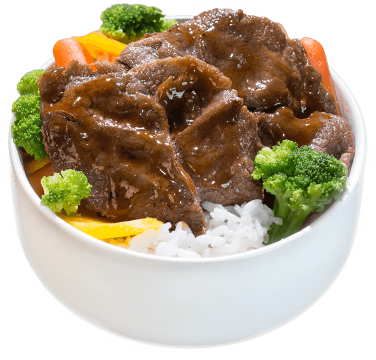

Rice Bowl Beef Teriyaki

Langkah pembuatan:
- Dalam mangkuk, campur semua bahan marinasi, aduk rata. Masukkan slice beef dan bakso, aduk rata, simpan di kulkas minimal 1 jam
- Panaskan margarin, tumis bawang bombai dan bawang putih sampai harum dan layu. Masukkan marinasi beef dan bakso tadi, aduk rata, masak sampai matang dan air menyusut
- Koreksi rasanya, bisa ditambahkan bumbu jika belum pas
- Setelah matang, angkat. Taruh nasi putih di mangkuk, beri secukupnya beef teriyaki, sajikan segera selagi hangat